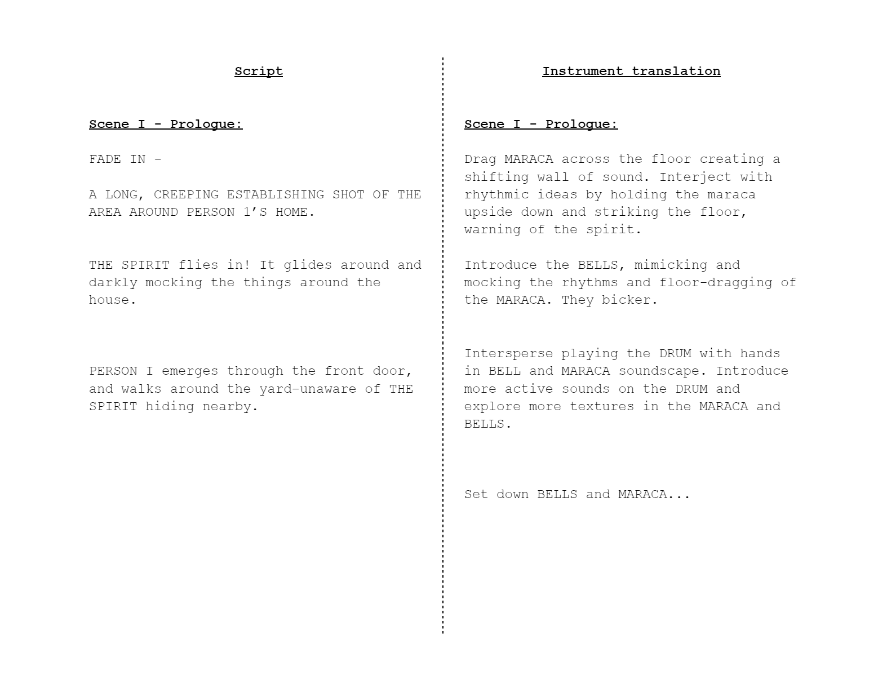

Multi percussion solo | Open duration | 2023
Theatre no. 1 is a play in six scenes. This work has no traditional notation. Instead, there is a script with camera and stage direction, with a translation for instruments. The performer will breathe life into the charterers and story through loosely-structured improvisation.
This piece is currently unpublished. Please email jcr101402@gmail.com with any questions.